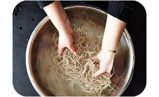
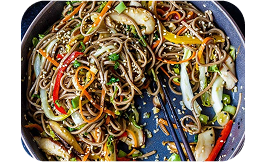

Japanese cuisine
50min | difficult | 2 servings
Chicken Soba | is a delicious and comforting Japanese dish that combines tender chicken with chewy buckwheat noodles in a flavorful broth. This dish perfectly balances savory, umami-rich flavors with fresh toppings like green onions, mushrooms, or a soft-boiled egg. Whether served hot in a steaming bowl of dashi-based soup or chilled with a dipping sauce, Chicken Soba is a versatile meal loved for its simplicity and depth of taste.
serving size
Smoke chicken fillets in thin strips, add soy sauce (to cover the meat). It's good to mix with caper and marinate for 30 minutes.
Fry thick strips of carrots and onions.
5-6 minutes in boiling water prepare soba noodles.

Roast the chicken on a small amount of oil. When it is almost ready, add vegetables, several spoons of water and bring to full readiness.

Mix with noodles. You can serve hot or cold.